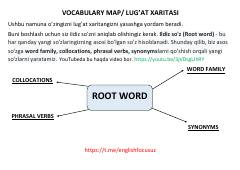

VMIngliz tili so'zlarini tizimli o'rganish va yodda saqlash bo'yicha uslubiy qo'llanma.
Ushbu qo'llanma ingliz tili so'z boyligini oshirish uchun 'lug'at xaritasi' usulidan foydalanishni o'rgatadi. Unda ildiz so'zlar, so'z oilalari, birikmalar va sinonimlar yordamida yangi so'zlarni tizimli o'rganish bo'yicha ko'rsatmalar va namunalar berilgan.